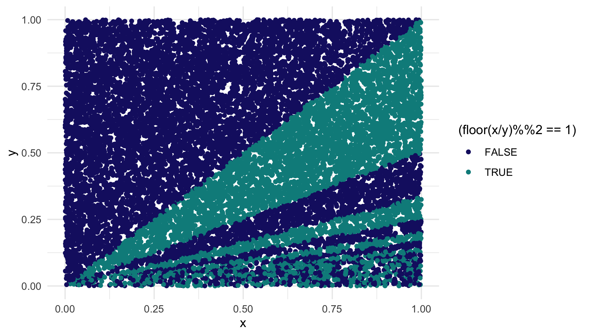

stats + coding thoughts
Home
About
Blog
stats + coding thoughts
gamma generalized linear models
(gone bayesian)
Nov 10, 2022

ggplot, geometry, and visualizing probability
a playful way to solve a complex probability problem
Oct 27, 2022
No matching items